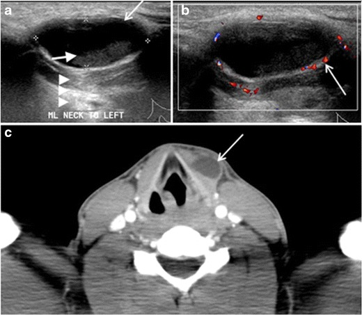

Ficha del catálogo
Quiste del conducto tirogloso
- Sistema
- Cabeza y cuello
- Modalidad
- US
- Región
- Línea media cervical
- Dificultad
- Básico
Es la masa cervical congénita más frecuente y deriva de restos del trayecto embrionario que sigue la tiroides desde la base de la lengua hasta su posición definitiva. Suele descubrirse en la infancia como una tumoración indolora de la línea media que asciende con la deglución y con la protrusión de la lengua. Puede infectarse y aumentar de tamaño de forma brusca tras una infección de vías respiratorias altas.
Técnica
El ultrasonido con transductor lineal de alta frecuencia es la exploración inicial porque confirma la naturaleza quística, sitúa la lesión respecto al hueso hioides y comprueba la presencia de una tiroides normal en su lugar. La tomografía o la resonancia se reservan para lesiones grandes, recurrentes o con sospecha de complicación. La confirmación de tejido tiroideo normal en el cuello es obligada antes de la cirugía.
Qué observar
- Lesión quística de la línea media o ligeramente lateralizada, a la altura del hioides o por debajo
- Contenido anecoico o con ecos internos finos según haya habido infección previa
- Refuerzo acústico posterior que confirma su naturaleza líquida
- Relación con la musculatura infrahioidea, que puede envolver la lesión
- Presencia de una glándula tiroides normal en su posición habitual
- Ausencia de nódulo sólido interno o de calcificaciones
Hallazgos
Se identifica una lesión bien delimitada, anecoica o de contenido finamente ecogénico, con pared fina y refuerzo posterior, situada en la línea media cervical en relación estrecha con el hueso hioides. Cuando se sitúa por debajo del hioides queda incluida entre las fibras de la musculatura infrahioidea, que la abrazan y ayudan a identificar su origen. Los episodios de infección engrosan la pared, aumentan la vascularización periférica y llenan la luz de detritos.
Perlas
Antes de indicar la resección hay que documentar una tiroides normal en su localización, porque en algunos casos el único tejido tiroideo funcionante del paciente está dentro del quiste y su extirpación provocaría hipotiroidismo. Un nódulo sólido con vascularización dentro de la lesión obliga a descartar un carcinoma originado en restos tiroideos.
Diagnóstico diferencial
- Quiste dermoide
- Es más superficial, de contenido heterogéneo con material graso, y no se desplaza con la deglución.
- Adenopatía submentoniana
- Es sólida, con hilio graso central y vascularización hiliar en el Doppler.
- Tiroides ectópica
- Es una masa sólida de ecogenicidad tiroidea, con ausencia de glándula en la celda habitual.
- Laringocele
- Contiene aire, se relaciona con la membrana tirohioidea y cambia de tamaño con las maniobras de esfuerzo.
Simuladores
- Bulbo de la vena yugular anterior dilatado en la línea media
- Lipoma cervical superficial de aspecto seudoquístico
- Absceso de partes blandas de la región submentoniana
Por modalidad
- TC
- Muestra una lesión de baja atenuación con pared fina, útil en casos grandes o infectados y para planear la cirugía.
- RM
- Ofrece señal alta en secuencias potenciadas en T2 y define bien la relación con la base de la lengua.
- US
- Confirma el carácter quístico, la relación con el hioides y la presencia de tiroides normal, sin radiación.
Protocolo
Ultrasonido con transductor lineal de alta frecuencia en planos transversal y longitudinal, con el cuello en extensión, explorando desde el suelo de la boca hasta el opérculo torácico. Se documenta la relación con el hueso hioides y se realiza un barrido completo de la celda tiroidea. Se añade Doppler color para valorar la pared y descartar componentes sólidos vascularizados.
Clasificación
Se describe por su relación con el hueso hioides en suprahioideo, a nivel del hioides o infrahioideo, siendo esta última la localización más frecuente. La descripción anatómica orienta la extensión de la resección, que incluye el cuerpo del hioides y el trayecto hacia la base de la lengua para reducir las recidivas.
Errores frecuentes
- No comprobar la presencia de tejido tiroideo normal antes de la cirugía
- Interpretar el contenido ecogénico tras una infección como lesión sólida
- Olvidar el Doppler y pasar por alto un nódulo mural vascularizado

quiste tirogloso línea media cervical masa cervical congénita hioides tiroides ectópica ultrasonido cervical cabeza y cuello